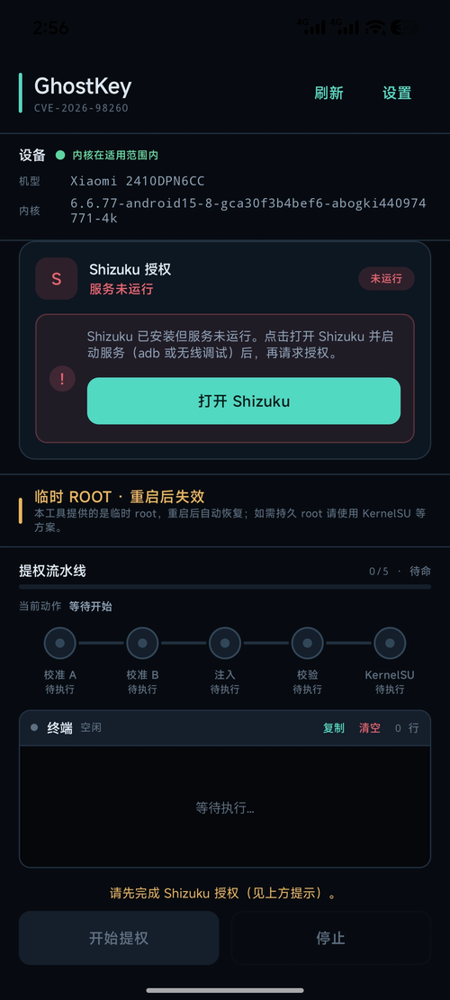
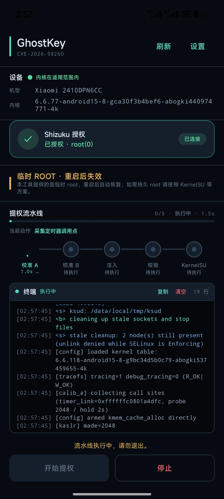
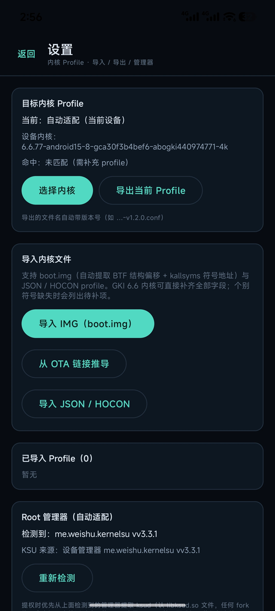

高版本也能拿到 root，
重启就还回去。
GhostKey 针对 Android 12 以上的高版本内核调过：接上 Shizuku，按下开始，五段流水线走完就拿到临时 root。成功率 99%，不刷机、不动 boot、不进系统分区，重启一次回到原样。



- 99%调试过的这批高版本内核上的成功率
- 1.2.0版本versionCode 19，安装包 6.6 MB
- 12+系统Android 12 及以上，minSdk 31
- arm64架构只发 64 位，走 64 位内核的地址布局
新系统越来越难提，它专门啃这一块。
Android 12 之后内核防护收紧，老一套偏移很容易在 6.6 上直接对不上。GhostKey 把提权拆成五段，一段一段校准，哪一段没过，界面上就停在哪一段。
成功率 99%
在反复测过的那批高版本内核上，99% 这个数字不是估的。换机型仍然要看 profile 对不对得上——对不上，是设备那一层的问题，不是流程没过。
接 Shizuku 就能跑
不用先有 root 才能拿 root。装好 Shizuku，用 adb 或无线调试把服务开起来，回来点授权，状态栏变成「已连接 · root(0)」就可以开始。
五段流水线，卡在哪看得见
校准 A、校准 B、注入、校验、KernelSU，五个点按顺序亮。每一步的耗时和当前动作都写在上面，终端同步刷原始日志。
内核 Profile 自己补
支持导入 boot.img，自动从里面抽 BTB 偏移和 kallsyms 地址；也能从 OTA 链接推导，或直接导入 JSON / HOCON 配置。个别符号缺失会列成待补项。
三页：看设备、走流程、配内核。
首页把设备内核和 Shizuku 状态摆最上面，中间是流水线，下面是终端；设置页只干一件事——让参数和你的内核对上。
三步，从装到拿到 root。
装 APK，看一眼设备
打开就会读机型和内核版本，标出「内核在适用范围内」还是需要补 profile。只支持 arm64，Android 12 及以上。
把 Shizuku 的服务开起来
装好 Shizuku，用 adb 或无线调试启动服务，回来点「打开 Shizuku」。授权通过后这里会显示「已连接 · root(0)」。
开始提权，等五个点走完
点「开始提权」，流水线一段段亮过去，终端刷着日志。五段走完就是 root 环境，想收回去，重启一次。
给的是一把临时钥匙，不是一间机房。
GhostKey 不做常驻管理器，也不替你发授权。它只负责这一次提权：跑完、拿到、用着；重启之后什么都不剩。
常驻方案要付出的
- 解锁 bootloader，部分机型会清空数据并影响保修。
- 写 boot 分区，刷错一次就是开机黑屏。
- 开机自启的守护进程，权限一直在，要自己盯。
- 装了模块、改过系统，之后想退回去得再刷一遍。
GhostKey
- 只在本次开机有效，重启自动失效，不留门。
- 不写系统分区，不动 boot，出问题重启就好。
- 没有常驻进程，也不用给它发长期授权。
- 高版本内核专门做了适配，不是照抄老偏移。
参数
提权会改变系统的安全边界。只在你拥有、或已获得授权的设备上使用。
| 系统要求 | Android 12 及以上（minSdk 31，targetSdk 35） |
|---|---|
| 安装包 | 6.6 MB · versionCode 19 |
| 架构 | arm64-v8a，仅 64 位 |
| 依赖 | Shizuku（adb 或无线调试启动服务）；可选配合 KernelSU 管理器 |
| 包名 | com.GhostKey.app |
| 权限 | 网络、查询已装应用、Shizuku API |
| 内核适配 | 导入 boot.img 自动提取偏移与符号；支持 OTA 链接推导、JSON / HOCON 导入 |
| 账号与数据 | 不需要注册；日志与 Profile 只存本机 |
6.6 MB · 更新于 2026 年 11 月 8 日
这次改了什么：第一次公开。临时 root，重启就恢复原样。
常问的几件事
一定要装 Shizuku 吗？
要。GhostKey 自己不申请 root，执行入口是 Shizuku 提供的那个服务进程。没装或者服务没起来，首页会直接给一句「Shizuku 已安装但服务未运行」，点按钮跳过去启动就行。
99% 是怎么算的？
是在我们反复测过的那批高版本内核上跑出来的比例——同一个机型、同一个内核、参数对得上，重复执行基本都过。换一套从没适配过的内核，先看首页那句「内核在适用范围内」，不在范围内就得先补 profile。
重启之后 root 还在吗？
不在。这是临时 root，重启即失效，本来就是这么设计的。想让 root 每次开机都在，得用 KernelSU 或 Magisk 那类常驻方案。
提示内核不支持 / 符号缺失怎么办？
去设置页。先试「导入 IMG（boot.img）」，它会自动抽 BTB 结构和 kallsyms 地址，GKI 6.6 内核能直接补齐大部分字段；手头没有 boot.img 就试「从 OTA 链接推导」，或者导入现成的 JSON / HOCON。仍然缺几个符号时，会列成待补项，照着补就行。
和 Dopamine 有什么区别？
同一个作者，场景不同。Dopamine 走内核提权的通用区间，界面简单直接；GhostKey 面向更高的系统版本，多了 Shizuku 授权、五段流水线、内核 Profile 导入这些，专门应付老偏移对不上的情况。两个都是临时的，重启就失效。
会不会把手机搞坏？
正常不会。整个过程不写系统分区、不动 boot。中途停掉或者重启，开机还是原来的系统。日志跟着终端走，出问题把那段复制出来最快定位。